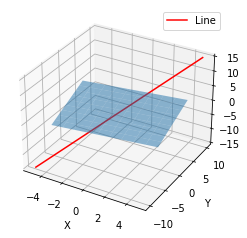
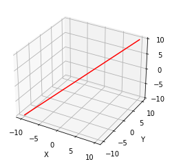

import numpy as np
import matplotlib.pyplot as plt
from mpl_toolkits.mplot3d import Axes3DImport
학습목표
- Vector Spaces and Subspaces
- Column space of \(A\) : solving \(Ax=b\)
- Nullspace of \(A\)
사전 학습
What is the vector space?
- It is a bunch of vectors that where I allow I can add the two vectors in the space.
- answer is that stayin in the space.
Vector space requirment
- \(v+w\) and \(cv\) are in the space
- all columns \(cv+dw\) are in the space.
- the sum and the scale multiplication which combines into linear combinations
- c랑 d에 어느 값을 곱해도(multiply) space 에 머무르는(stay)공간 = vector space
# 임의의 평면 방정식: ax + by + cz + d = 0 (원점을 지나므로 d = 0)
a, b, c = 1, 2, -3
# 임의의 선 방정식: x = t, y = 2t, z = 3t
t = np.linspace(-5, 5, 100) # 매개변수 t 값 생성
x_line = t
y_line = 2 * t
z_line = 3 * t
# 그래프 생성
fig = plt.figure()
ax = fig.add_subplot(111, projection='3d')
# 원점을 지나는 평면 그리기
x_plane, y_plane = np.meshgrid(np.linspace(-5, 5, 10), np.linspace(-5, 5, 10))
z_plane = (-a * x_plane - b * y_plane) / c
ax.plot_surface(x_plane, y_plane, z_plane, alpha=0.5)
# 원점을 지나는 선 그리기
ax.plot(x_line, y_line, z_line, label='Line', color='r')
# 축 레이블 설정
ax.set_xlabel('X')
ax.set_ylabel('Y')
ax.set_zlabel('Z')
# 범례 추가
ax.legend()
# 그래프 출력
plt.show()
blue: plane through \(\begin{bmatrix} 0 \\ 0 \\ 0 \end{bmatrix}\) is subspace of \(R^3\)
red: line is a subplace (through \(\begin{bmatrix} 0 \\ 0 \\ 0 \end{bmatrix}\)) \(\to\) 모든 vector를 포함하지 않음.
- 2 subspaces : \(P\) and \(L\)
\(P \cup L\) = all vectors in \(P\) or \(L\) or both
- This is not a subspace.
\(P \cap L\) = all vectors in both \(P\) and \(L\)
- This is a subspace
- \(\begin{bmatrix} 0 \\ 0 \\ 0 \end{bmatrix}\) 이 자체만으로 subspace 가능, 아무거나 multiply해도 0이잖아.
- Subspaced \(S\) and \(T\), interaction \(S \cap T\) is a subspace.
vector \(d\),\(W\)가 있을때,
- \(\{d,w \} \in S\), \(\{d,w \} \in T\)라면,
- \(\{d,w \}\cup S = S\), 왜냐하면 \(S\)에 \(\{d,w \}\)가 속하니까.
- \(\{d,w \}\cup T = T\), 왜냐하면 \(T\)에 \(\{d,w \}\)가 속하니까.
- \(\{7d,7w \}\in S\), multiply해도 속함.
- \(\{7d,7w \}\in T\), multiply해도 속함.
- original \(\{d,w \}\)가 \(S,T\)에 속하고 \(S,T\)는 subspace이다.
- Column Space of \(A\)
\(A = \begin{bmatrix} 1 & 1 & 2 \\ 2 & 1 & 3 \\ 3 & 1 & 4 \\ 4 & 1 & 5 \end{bmatrix}\)
\(A\)는 \(4 \times 3\) matrix니까 column space of \(A\) is subspace of \(R^4\).
Column Space of \(A = C(A)\) \(\to\) All linear combinations of columns
- Does \(Ax=b\) have a solution for every \(b\)?
- NO
- Which right hand side \(b\) ok?
- \(Ax=b\) \(\to\) 4 equations and 3 unknowns
- We can’t always do it. there are a lots of vectors \(b\). that are not combinations of these columns.
\(Ax = \begin{bmatrix} 1 & 1 & 2 \\ 2 & 1 & 3 \\ 3 & 1 & 4 \\ 4 & 1 & 5 \end{bmatrix} \begin{bmatrix} x_1 \\ x_2 \\ x_3 \end{bmatrix} = \begin{bmatrix} b_1 \\ b_2 \\ b_3 \\ b_4\end{bmatrix}\)
- 즉, 몇 개의 vector \(b\)의 solve한 결과가 존재한다.
- that’s the bunch of right-hand side.
- Which \(b\)’s allow this system to be solved?
- when \(b\)’s are all zero.
- \(Ax = OI\)
\(Ax = \begin{bmatrix} 1 & 1 & 2 \\ 2 & 1 & 3 \\ 3 & 1 & 4 \\ 4 & 1 & 5 \end{bmatrix} \begin{bmatrix} 1 \\ 0 \\ 0 \end{bmatrix} = \begin{bmatrix} 1 \\ 2 \\ 3 \\ 4\end{bmatrix}\)
\(Ax = \begin{bmatrix} 1 & 1 & 2 \\ 2 & 1 & 3 \\ 3 & 1 & 4 \\ 4 & 1 & 5 \end{bmatrix} \begin{bmatrix} 0 \\ 1 \\ 0 \end{bmatrix} = \begin{bmatrix} 1 \\ 1 \\ 1 \\ 1\end{bmatrix}\)
- can solve \(Ax=b\) exactly when the right hand side \(b\) is a vector in the column space \(C(A)\)
- can solve \(Ax=b\) when \(b\) is a combination of the columns, when it’s in the column space.
Why?
- because the column space by it’s definition contains all the combinations.
- If \(b\) is a combination of the columns, then that combination tells me what \(x\) should be.
- If \(b\) is not a combination of the columns, then there is no \(x\)(\(Ax=b\) 못 푼다.)
Can I throw away columns and have the same column space>
- which one do you suggest I throw away?
- 3 column : 1 column + 2 column = 3column이니까 관계 있어 보여서.
- 1 column 해도 이 관계가 무너지긴 함.
- throw away 한다면, the column space of this matrix \(A\) as a two dimensional subspace of \(R^4\) 되겠지..?
- Nullspace of \(A\)
- all solutions \(x = \begin{bmatrix} x_1 \\ x_2 \\ x_3\end{bmatrix}\) in \(R^3\) to \(Ax = 0\).
\(Ax = \begin{bmatrix} 1 & 1 & 2 \\ 2 & 1 & 3 \\ 3 & 1 & 4 \\ 4 & 1 & 5 \end{bmatrix} \begin{bmatrix} x_1 \\ x_2 \\ x_3 \end{bmatrix} = \begin{bmatrix} 0 \\ 0 \\ 0 \\ 0 \end{bmatrix}\)
Whatever that matrix is, its nullspace contains zero.
- because \(A\) times zero vector sure gives the zero right-hand side.
\(Ax = \begin{bmatrix} 1 & 1 & 2 \\ 2 & 1 & 3 \\ 3 & 1 & 4 \\ 4 & 1 & 5 \end{bmatrix} \begin{bmatrix} x_1 \\ x_2 \\ x_3 \end{bmatrix} = \begin{bmatrix} 0 \\ 0 \\ 0 \\ 0\end{bmatrix}\)
Nullspace \(N(A)\) contains \(\begin{bmatrix} 0 \\ 0 \\ 0 \end{bmatrix}\), \(c\begin{bmatrix} 1 \\ 1 \\ -1\end{bmatrix}\)
\(Ax = \begin{bmatrix} 1 & 1 & 2 \\ 2 & 1 & 3 \\ 3 & 1 & 4 \\ 4 & 1 & 5 \end{bmatrix} \begin{bmatrix} c \\ c \\ -c \end{bmatrix} = \begin{bmatrix} 0 \\ 0 \\ 0 \\ 0\end{bmatrix}\)
이것은 아래와 같은 line으로 나타나며, line in \(R^3\)이다.
# 선의 방정식: x = x0 + at, y = y0 + bt, z = z0 + ct
# 이 예시에서는 (0,0,0)을 지나고 (1,1,1)을 향하는 선을 그립니다.
x0, y0, z0 = 0, 0, 0
a, b, c = 1, 1, 1
t = np.linspace(-10, 10, 100) # t 값의 범위 설정
# 선 위의 점들
x_line = x0 + a * t
y_line = y0 + b * t
z_line = z0 + c * t
fig = plt.figure()
ax = fig.add_subplot(111, projection='3d')
# 선 그리기
ax.plot(x_line, y_line, z_line, color='r')
ax.set_xlabel('X')
ax.set_ylabel('Y')
ax.set_zlabel('Z')
plt.show()
How do I know that the null space is a vector space?
- Check that the solutions to \(Ax = 0\)
- always give a subspace
- If \(Av=0\) and \(Aw=0\)a then \(A(v+w)=0\), \(Av+Aw=0\)
- \(v\) is in the nullspace.
- \(w\) is in the nullspace.
- \(v+w\) is in the nullspace.
- then \(A(12v) = 0\), \(12Av = 0\).
\(Ax = \begin{bmatrix} 1 & 1 & 2 \\ 2 & 1 & 3 \\ 3 & 1 & 4 \\ 4 & 1 & 5 \end{bmatrix} \begin{bmatrix} x_1 \\ x_2 \\ x_3 \end{bmatrix} = \begin{bmatrix} 1 \\ 2 \\ 3 \\ 4\end{bmatrix}\)
Do I get the subspace if I get the solutions to \(\begin{bmatrix} x_1 \\ x_2 \\ x_3 \end{bmatrix}\)?
Do the x-s the solutions from the vector space?
- No
- the solutions to this do not from a subspace.
- zero vector is not a solution.
- solution can’t be a vector space.
solution
but it is not a subspace
\(Ax = \begin{bmatrix} 1 & 1 & 2 \\ 2 & 1 & 3 \\ 3 & 1 & 4 \\ 4 & 1 & 5 \end{bmatrix} \begin{bmatrix} 1 \\ 0 \\ 0 \end{bmatrix} = \begin{bmatrix} 1 \\ 2 \\ 3 \\ 4\end{bmatrix}\)
\(Ax = \begin{bmatrix} 1 & 1 & 2 \\ 2 & 1 & 3 \\ 3 & 1 & 4 \\ 4 & 1 & 5 \end{bmatrix} \begin{bmatrix} 0 \\ -1 \\ 1 \end{bmatrix} = \begin{bmatrix} 1 \\ 2 \\ 3 \\ 4\end{bmatrix}\)